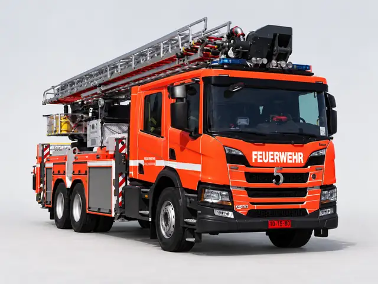

Scania-Ziegler/Cela TLF 40/12 + ALP 330X
Scania P410
Plataforma aérea diseñada para rescates de difícil acceso y para el control de incendios en edificios.
Funciones de la unidad
- Rescate de personas en lugares de difícil acceso.
- Operaciones de control de incendios en edificios con apoyo de plataforma aérea.
Otras unidades en servicio
Ver archivo histórico de unidades